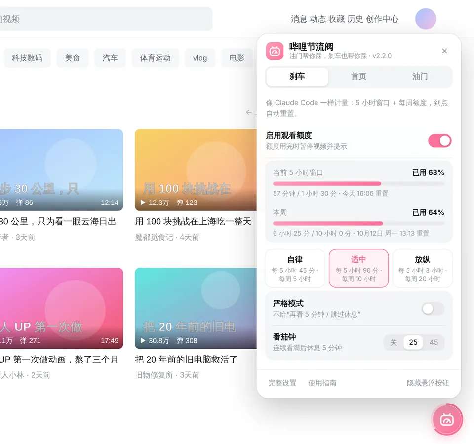
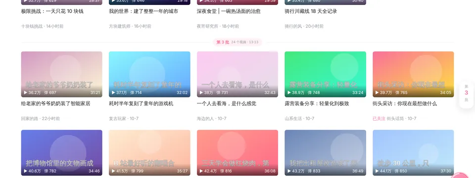
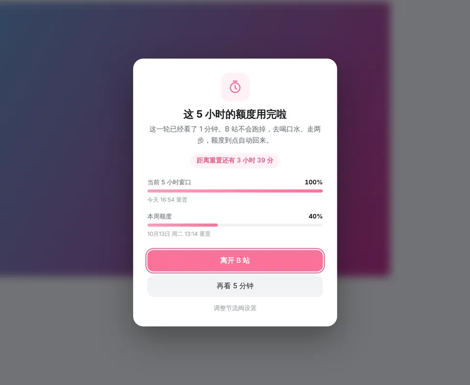
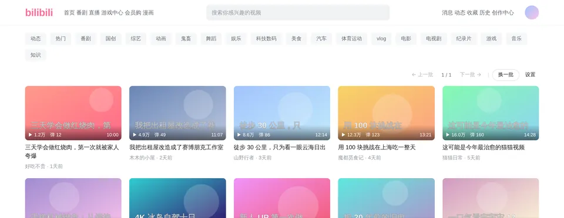

快捷面板
刹车 / 首页 / 油门三个标签页，常用开关一处搞定；按钮外圈实时显示 5 小时额度用了多少。
BILITHROTTLE · 哔哩节流阀
视频加载更快，首页更干净、刷不到头；刷多了，像 Claude Code 的用量额度一样提醒你歇一歇。
快到底时自动加载更多推荐，按批次拼接，去重并过滤广告。
5 小时窗口 + 每周额度，到点重置；可随时在快捷面板里改。

刹车 / 首页 / 油门三个标签页，常用开关一处搞定；按钮外圈实时显示 5 小时额度用了多少。

B 站「换一换」每次只换两行。打开后快到底就自动多路请求，按「第 N 批」接在下面。

5 小时窗口和每周额度从首次观看起算，显示已用百分比、重置时间和倒计时；还有番茄钟休息。

去掉大图轮播和广告卡片；每次「换一批」都存一份，手滑了能翻回上一批。
快捷面板 →「油门」→ 关闭视频加速后刷新；或在完整设置里把播放内核切到「兼容模式」。
快捷面板 →「首页」→ 关闭「首页净化与操作栏」即恢复原生首页。
把「加载速度」调到「稳」，过几分钟点「重试」。插件遇到限流会自己停下，不会一直请求。
不要同时启用另一份线程撕裂者扩展或用户脚本，两套播放器拦截会冲突。